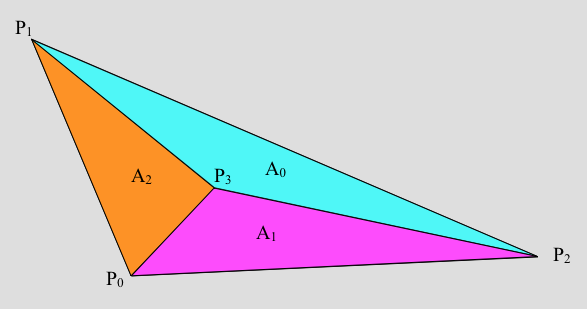

Tutorials to Applied Visualization (2): Interpolation and Plotting 2D-Functions
Interpolation is also very important in computer graphics. Let's have a look at it!
Assignment 2.1: Theory: Interpolation
a) Linear Interpolation
Given the points $p_0 = (0,2)$ and $p_1 = (5,7)$ with function values $f_0 = 10$ and $f_1 = 18$ compute the function value at $p = (2, 4)$ using linear interpolation.
All three points are on one line (otherwise a linear interpolation is not possible). Therefore it is sufficient to use only the x-coordinate for the computation. The linear interpolation is given as the following: $$f(p) = \alpha f(p_0) + \beta f(p_1), \alpha + \beta = 1$$ $$\Rightarrow f(p) = \alpha f_0 + \beta f_1$$ The interpolation factors are computed by $$\alpha = \frac{p - p_0}{p_1 - p_0} = \frac{2 - 0}{5 - 0} = \frac{2}{5},$$ $$\beta = \frac{p_1 - p}{p_1 - p_0} = \frac{5 - 2}{5 - 0} = \frac{3}{5}.$$ Therefore the function evaluates to the following at point $p$: $$f(p) = \frac{2}{5} \cdot 10 + \frac{3}{5} \cdot 18 = \frac{66}{5} = 13.2$$
b) Bilinear Interpolation
Given the quadrilateral $$A = (1,1), B = (7,1), C = (9,7), D = (3,7)$$ with function values at the vertices $$f_A = 7, f_B = 11, f_C = 9, f_D = 13.$$ Compute the value at $P = (5,4)$.
Taking a closer look at the values, one can see that the given quad is a parallelogram and that $P$ is at its center of gravity. Therefore the function value at $P$ is just the average of the other points $$f(P) = \frac{1}{4} (7 + 11 + 9 + 13) = 10.$$
c) Bilinear Interpolation Continued
Now point $D$ moves to $(0,11)$. Again compute the value at $P = (5,4)$.
If this text appears, then 'stencilWalk.js' did not execute properly!
Assignment 2.2: Theory: Barycentric Coordinates
Given four points $P_i \in R^2, i \in {0,1,2,3}$ $$P_0 = (1,3), P_1 = (5,6), P_2 = (7,0), P_3 = (4.5,3).$$
a) Compute the triangle areas
$$A_0, A_1, A_2, A = A_0 + A_1 + A_2$$ and the barycentric coordinates of $P_3$.
$$A_0 = 0.5 \left|\overrightarrow{P_2 P_1} \times \overrightarrow{P_2 P_3}\right| = 0.5 \left| \pvcc{-2}{6} \times \pvcc{-2.5}{3} \right| = 4.5$$ $$A_1 = 0.5 \left|\overrightarrow{P_0 P_2} \times \overrightarrow{P_0 P_3}\right| = 0.5 \left| \pvcc{6}{-3} \times \pvcc{3.5}{0} \right| = 5.25$$ $$A_2 = 0.5 \left|\overrightarrow{P_0 P_3} \times \overrightarrow{P_0 P_1}\right| = 0.5 \left| \pvcc{3.5}{0} \times \pvcc{4}{3} \right| = 5.25$$ $$A = A_1 + A_2 + A_3 = 15$$
b) Answer the following questions
- If $u = 0$, where would $P_3$ end up?
- Where are all points with $u + v + w = 1$ and $u,v,w > 0$ located?
- Where is the point with $u = v = w = \frac{1}{3}$ located?
- What are the barycentric coordinates of the vertices $P_0$, $P_1$ and $P_2$?
For the following task consider the barycentric coordinates $u, v, w$, $$P(u,v,w) = u P_0 + v P_1 + w P_2.$$
- $P(u = 0, v, w) = v P_1 + w P_2 \Rightarrow P_3$ would lie along the line defined by $P_1$ and $P_2$.
- $u + v + w = 1$ and $u, v, w > 0 \Rightarrow$ these points are located inside the triangle $A$.
- The point with $u = v = w = \frac{1}{3}$ is located in the center of gravity.
- $P_0 = P(1,0,0)$, $P_1 = P(0,1,0)$, $P_2 = P(0,0,1)$.
c) Interpolation
The triangle $\Delta(P_0,P_1,P_2)$ is a cell in a 2D dataset representing the cities Stuttgart, Nürnberg and München. We measure the temperature in these cities and end up with the following measurement values a the vertices: $$f(P_0) = 20.0, f(P_1) = 25.0, f(P_2)=21.0$$ Compute the interpolated temperature in Nördlingen represented by $P_3$.
$$\begin{align} f(P_3) &= u f_0 + v f_1 + w f_2\\ &= \frac{A_0}{A} f_0 + \frac{A_1}{A} f_1 + \frac{A_2}{A} f_2\\ &= \frac{4.5}{15} \cdot 20 + \frac{5.25}{15} \cdot 25 + \frac{5.25}{15} \cdot 21\\ &= 22.1 \end{align}$$
Assignment 2.3: Linearizing Matrices
In this assignment we will implement mappings between 2-dimensional matrices and a 1-dimensional array.
a) Matrix Conversion
Convert a 1D-Array to a 2D-Matrix and vice versa.
b) Indexing
Address a 2D-matrix with a 1D-Index.
c) Printing
Print a 2D-Matrix that is stored in a 1D data array.
Assignment 2.4: Plotting a 2D function
In this part of the assignment we want to plot a 2D-function by sampling it in a regular pattern.
a) |
Create the function
func that is to be visualized and that takes two arguments
x, y and returns
x×y
|
b) |
Create a function called
CtoPSpace to convert the 2D position inside the sampling grid to 2D x,y coordinates. This function takes three
arguments:
(x,y) in P space.
|
c) |
Implement a function called
getIndex. This function converts an index into a 2D array that is saved as a 1D array. Arguments:
|
d) |
Implement a function called
evaluateFunc. Arguments:
func from (start,start) to (end,end) using "samples"-samples in each dimension. Use the previously implemented
function
CtoPSpace to convert between coordinate systems. The return value should be an array of tuples that contain
(x,y,func(x,y)).
|
e) |
Implement a function called
triangulateSamples. It takes the number of samples as argument and creates an index list for a triangulation of a grid
sized $\text{numSamples} \times \text{numSamples}$. Three consecutive indices represent one triangle.
|
Samples without triangulation
Samples with triangulation
See the solution for reference.